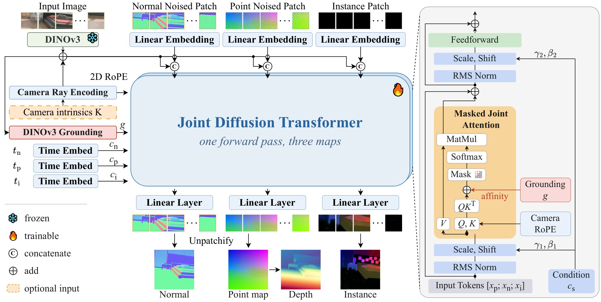
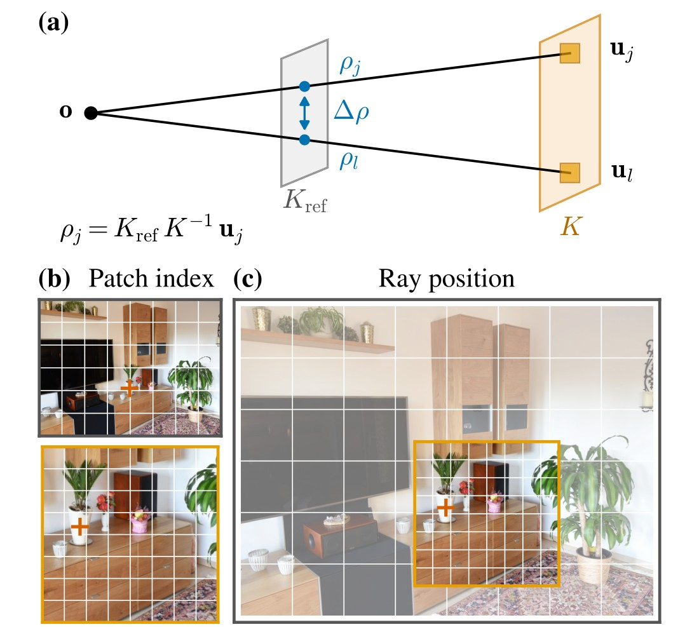
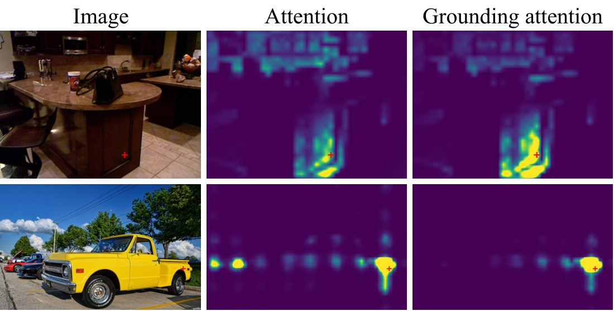
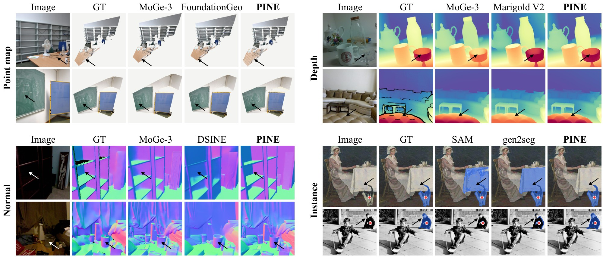
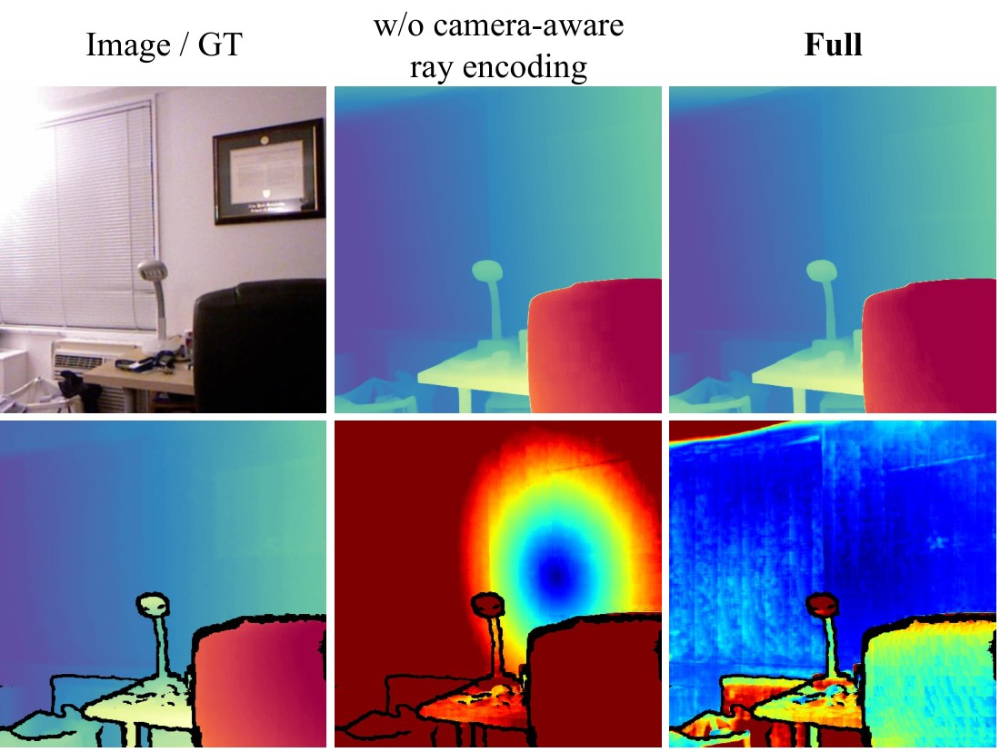
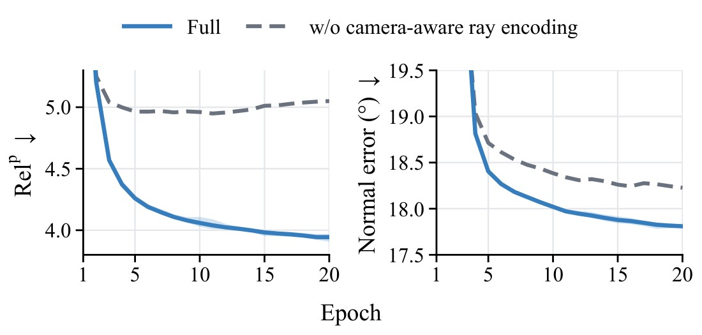

Compare with baselines
Ground truth
 Loading…
Loading…
Understanding a scene requires both geometry and semantics: geometry recovers its spatial structure, and semantics separates it into objects. Current models obtain the two from separate networks or separate passes. We present PINE, a one-step omni Diffusion Transformer that predicts the point map, the surface normals and the instance map of an image in one forward pass. PINE treats each map as a token stream, and a stream mask decides which streams interact. A camera-aware ray encoding positions every token by its camera ray rather than its pixel. Grounding attention adds the affinity of pretrained DINOv3 features to the attention logits. Trained on only 139K synthetic images for geometry, PINE achieves state-of-the-art point maps both with and without intrinsics and the best average rank on surface normals. It also exceeds SAM on large objects with less than 1% of its training images, and it predicts all three maps 5.7× faster than MoGe-3 combined with SAM.

A point map back-projects every pixel along its camera ray, so the intrinsics fix the direction along which each depth is placed. PINE therefore indexes every token by the ray through its patch. Without intrinsics, PINE uses a default camera and recovers the focal length from its own point map.

A normal is constant over a planar surface, and an instance label is constant over an object, so both maps depend on which pixels belong together. PINE therefore writes the affinity of DINOv3 features into the attention logits as a bias.


PINE-H has the best average rank over the three maps and runs 5.7 times faster than MoGe-3 combined with SAM, which ranks lower. PINE-L matches the rank of UniDepthV2, Marigold V2 and SAM combined and runs 11 times faster. PINE-H even runs 3.1 times faster than SAM alone, while it also predicts the point map and the normals.


@article{pine2026,
title = {PINE: Point Map, Instance and Normal Estimation in One Diffusion Step},
author = {Anonymous},
journal = {arXiv preprint},
year = {2026},
}